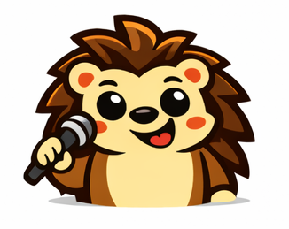

Yozhik's Welcome Song Песня Ёжика

0:00 / 0:00
Lyrics Текст песни
[Accordion opens gently, glockenspiel sparkles]
[Verse 1 - English]
There's a hedgehog in Des Moines with a story to share
He waits in the library with a little green chair
He doesn't care if you stumble, doesn't care if you're slow
The only way to learn a language is to give it a go
[Verse 1 - Russian]
Ёжик в Де-Мойне ждёт, у него есть рассказ
В библиотеке он сидит и приветствует вас
Ему всё равно, если трудно, если страшно начать
Ведь чтобы выучить язык, нужно просто болтать
[Chorus - Bilingual]
Приходите, come on in, every Saturday at one
Говорите, laugh and learn, till the afternoon is done
From the Baltics to the Steppe, every voice belongs
This is Yozhik's welcome — Привет от Ёжика — our song
[Verse 2 - English]
Maybe you grew up in Minsk, maybe you're from here
Maybe Russian's just a dream you've been chasing for years
Doesn't matter where you're from or what words you know
The table's set, the tea is warm, and there's room left to grow
[Verse 2 - Russian]
Может, ты из Минска родом, может, из Айовы
Может, русский — мечта, к которой шёл ты годы
Неважно, кто ты, откуда, сколько слов ты знаешь
За столом есть место, здесь тебя понимают
[Chorus - Bilingual]
Приходите, come on in, every Saturday at one
Говорите, laugh and learn, till the afternoon is done
From the Baltics to the Steppe, every voice belongs
This is Yozhik's welcome — Привет от Ёжика — our song
[Bridge - Spoken/Soft]
«Как дела?» — How are you?
«Давай поговорим» — Let's talk
«Мы рады вас видеть» — We're glad you're here
[Final Chorus - Full Energy]
Приходите, come on in, every Saturday at one
Говорите, laugh and learn, till the afternoon is done
From the Baltics to the Steppe, every voice belongs
This is Yozhik's welcome — Привет от Ёжика — our song
[Outro - Accordion fades]
Добро пожаловать... Welcome home...
Memory Game - Match the Pairs! Игра на память - Найди пары!
Match each Yozhik with their action in both languages Соедини каждого Ёжика с его действием на обоих языках
Moves:
Ходов:
0